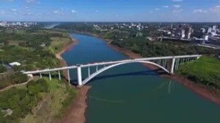
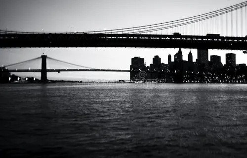
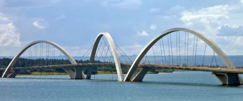
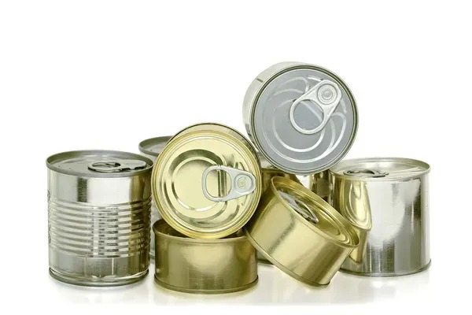
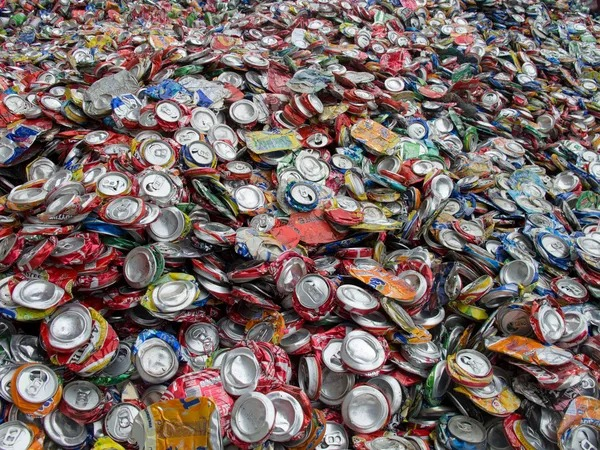
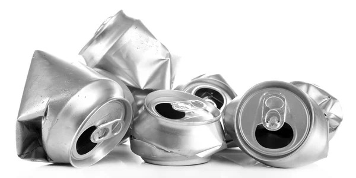

Ponte sobre o rio
Imagem de uma ponte moderna passando sobre um rio em uma paisagem urbana.
Site simples feito com HTML e CSS, contendo imagens organizadas e descricoes no atributo alt.
Esta pagina apresenta imagens relacionadas a pontes e reciclagem de latas, organizadas em cards com bordas, espacamentos e textos explicativos.

Imagem de uma ponte moderna passando sobre um rio em uma paisagem urbana.

Registro artistico de uma ponte suspensa, destacando a estrutura e o contraste da paisagem.

Ponte com formato de arcos, mostrando arquitetura e engenharia em um ambiente aberto.

Lata1

Lata2

Lata3